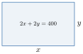
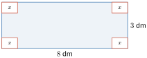
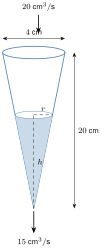
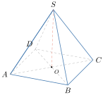

- ប្រើដេរីវេក្នុងការគណនាតម្លៃបរមា
- ដោះស្រាយចំណោទដែលជួបប្រទះក្នុងការរស់នៅប្រចាំថ្ងៃ
- កំណត់ល្បឿន និងសំទុះនៃចលនាមួយ
- ប្រើដេរីវេក្នុងការគណនាអត្រាបម្រែបម្រួល ។
1. អនុវត្តន៍ក្នុងការគណនាតម្លៃបរមា
កសិករម្នាក់ចង់ធ្វើរបងព័ទ្ធចម្ការមួយដែលមានរាងជាចតុកោណកែង ដែលមានបរិមាត្រស្មើនឹង \(\displaystyle 400\ \text{m}\) (ដូចរូប) ។
ក. គណនាផ្ទៃក្រឡាចម្ការនេះជាអនុគមន៍នៃ \(\displaystyle x\) ។
ខ. កំណត់តម្លៃ \(\displaystyle x\) និង \(\displaystyle y\) ដើម្បីឱ្យផ្ទៃក្រឡាចម្ការនេះមានតម្លៃធំបំផុត ។

ក. គណនាផ្ទៃក្រឡាចម្ការជាអនុគមន៍នៃ \(\displaystyle x\) ។ ដោយចម្ការនេះមានរាងជាចតុកោណកែង គេបានផ្ទៃក្រឡាចម្ការគឺ \(\displaystyle xy\) ។ ដោយបរិមាត្រចម្ការស្មើនឹង \(\displaystyle 400\ \text{m}\) នាំឱ្យ \(\displaystyle 2x + 2y = 400\) សមមូល \(\displaystyle x + y = 200 \Rightarrow y = 200 - x\) នោះគេបាន \(\displaystyle xy = x(200 - x) = 200x - x^2\) ។ ដូច្នេះ ផ្ទៃក្រឡាចម្ការជាអនុគមន៍នៃ \(\displaystyle x\) គឺ \(\displaystyle A(x) = 200x - x^2\) ។
ខ. កំណត់តម្លៃ \(\displaystyle x\) និង \(\displaystyle y\) ដើម្បីឱ្យផ្ទៃក្រឡាចម្ការនេះមានតម្លៃធំបំផុត ។ គេមាន \(\displaystyle A(x) = 200x - x^2\) នោះគេបាន \(\displaystyle A'(x) = (200x - x^2)' = 200 - 2x\) ។ ឱ្យ \(\displaystyle A'(x) = 0\) សមមូល \(\displaystyle 200 - 2x = 0 \Leftrightarrow x = 100\) ។
តារាងអថេរភាព
| \(\displaystyle x\) | \(\displaystyle 0\) | \(\displaystyle 100\) | \(\displaystyle 200\) | ||
| \(\displaystyle A'(x)\) | \(\displaystyle +\) | \(\displaystyle 0\) | \(\displaystyle -\) | ||
| \(\displaystyle A(x)\) | \(\displaystyle \nearrow\) | អតិបរមា | \(\displaystyle \searrow\) |
ផ្ទៃក្រឡាចម្ការមានតម្លៃអតិបរមា លុះត្រាតែ \(\displaystyle x = 100\) ។ តាម \(\displaystyle y = 200 - x\) គេបាន \(\displaystyle y = 200 - 100 = 100\) ។ ដូច្នេះ ដើម្បីឱ្យផ្ទៃក្រឡាចម្ការមានតម្លៃធំបំផុត លុះត្រាតែ \(\displaystyle x = 100\ \text{m}\), \(\displaystyle y = 100\ \text{m}\) ។ (ផ្ទៃក្រឡាអតិបរមា \(\displaystyle A(100) = 10\,000\ \text{m}^2\) ជាការ៉េ ។)
គេចង់ធ្វើប្រអប់បើកមួយពីក្រដាសកាតុងដែលមានរាងចតុកោណកែងដោយកាត់ការេតូចៗនៅត្រង់ម៉ុំកែងចេញ (ដូចរូប) ។ គេដឹងថាបណ្ដោយ \(\displaystyle 8\ \text{dm}\) និងទទឹង \(\displaystyle 3\ \text{dm}\) ។
ក. គណនាមាឌនៃប្រអប់ជាអនុគមន៍នៃ \(\displaystyle x\) ។
ខ. កំណត់តម្លៃ \(\displaystyle x\) ដើម្បីឱ្យប្រអប់មានមាឌអតិបរមា រួចគណនាមាឌអតិបរមានោះ ។

ក. ដើម្បីធ្វើប្រអប់បានលុះត្រាតែ \(\displaystyle 0 < 2x < 3\) សមមូល \(\displaystyle 0 < x < 1{,}5\) ។ ដោយប្រអប់បើកមានរាងជាប្រលេពីប៉ែតកែង គេបានមាឌប្រអប់គឺ
ដូច្នេះ មាឌនៃប្រអប់គឺ \(\displaystyle V(x) = 4x^3 - 22x^2 + 24x\) ។
ខ. គេមាន \(\displaystyle V(x) = 4x^3 - 22x^2 + 24x\) នោះគេបាន \(\displaystyle V'(x) = 12x^2 - 44x + 24\) ។ គេឱ្យ \(\displaystyle V'(x) = 0\) សមមូល \(\displaystyle 12x^2 - 44x + 24 = 0 \Leftrightarrow 3x^2 - 11x + 6 = 0 \Leftrightarrow (3x - 2)(x - 3) = 0 \Leftrightarrow x = \dfrac23,\ x = 3\) ។ ដោយ \(\displaystyle 0 < x < 1{,}5\) នោះ \(\displaystyle x = 3\) មិនយក ។
តារាងអថេរភាព
| \(\displaystyle x\) | \(\displaystyle 0\) | \(\displaystyle \frac23\) | \(\displaystyle 1{,}5\) | ||
| \(\displaystyle V'(x)\) | \(\displaystyle +\) | \(\displaystyle 0\) | \(\displaystyle -\) | ||
| \(\displaystyle V(x)\) | \(\displaystyle \nearrow\) | អតិបរមា | \(\displaystyle \searrow\) |
មានអតិបរមា \(\displaystyle V\left(\dfrac23\right) = 4\left(\dfrac23\right)^3 - 22\left(\dfrac23\right)^2 + 24\left(\dfrac23\right) = \dfrac{200}{27}\ \text{dm}^3\) ។ ដូច្នេះ \(\displaystyle x = \dfrac23\ \text{dm}\) ដើម្បីឱ្យប្រអប់មានមាឌអតិបរមា និងមាឌអតិបរមាគឺ \(\displaystyle V\left(\dfrac23\right) = \dfrac{200}{27}\ \text{dm}^3 \approx 7{,}41\ \text{dm}^3\) ។ (សម្គាល់ ៖ សៀវភៅបោះពុម្ព \(\displaystyle \dfrac{209}{27}\) ដែលមិនត្រឹមត្រូវ ; \(\displaystyle \dfrac{32}{27} - \dfrac{264}{27} + \dfrac{432}{27} = \dfrac{200}{27}\) ។)
ក្រុមហ៊ុនផលិតសម្ភារៈប្រើប្រាស់មួយបានចំណាយប្រាក់ចំនួន \(\displaystyle 2\) ពាន់រៀល សម្រាប់ផលិតសម្ភារៈ \(\displaystyle 1\) គ្រឿង ។ គេដឹងថាបើក្រុមហ៊ុនលក់សម្ភារៈ \(\displaystyle 1\) គ្រឿងតម្លៃ \(\displaystyle 5\) ពាន់រៀល នោះក្នុងមួយខែលក់អស់ \(\displaystyle 4000\) គ្រឿង ។ អ្នកគ្រប់គ្រងក្រុមហ៊ុនបានសង្កេតឃើញថា កាលណាតម្លៃសម្ភារៈកើនឡើងម្ដង \(\displaystyle 1\) ពាន់រៀល នោះបរិមាណសម្ភារៈលក់ចេញក្នុង \(\displaystyle 1\) ខែថយចុះម្ដង \(\displaystyle 400\) គ្រឿង ។ កំណត់តម្លៃសម្ភារៈ \(\displaystyle 1\) គ្រឿងដែលក្រុមហ៊ុនត្រូវលក់ ដើម្បីទទួលបានប្រាក់ចំណេញជាអតិបរមា ។
តាង \(\displaystyle x\) ជាតម្លៃលក់សម្ភារៈ \(\displaystyle 1\) គ្រឿង និង \(\displaystyle P(x)\) ជាអនុគមន៍ប្រាក់ចំណេញសរុប ។ ប្រាក់ចំណេញសរុប \(\displaystyle =\) (ប្រាក់ចំណេញក្នុង \(\displaystyle 1\) គ្រឿង) \(\displaystyle \times\) (បរិមាណសម្ភារៈ) ។ តាមសម្មតិកម្ម គេបាន ប្រាក់ចំណេញក្នុង \(\displaystyle 1\) គ្រឿង \(\displaystyle = x - 2\) ពាន់រៀល ។
- បើលក់ \(\displaystyle 5\) ពាន់រៀលក្នុងមួយគ្រឿងនោះបរិមាណលក់ \(\displaystyle 4000\) គ្រឿងក្នុងមួយខែ
- បើលក់ \(\displaystyle 6\) ពាន់រៀលក្នុងមួយគ្រឿងនោះបរិមាណលក់ \(\displaystyle 4000 - 400(6 - 5)\) គ្រឿងក្នុងមួយខែ
- \(\displaystyle \dots\)
- បើលក់ \(\displaystyle x\) ពាន់រៀលក្នុងមួយគ្រឿងនោះបរិមាណលក់ \(\displaystyle 4000 - 400(x - 5)\) គ្រឿងក្នុងមួយខែ
គេបាន \(\displaystyle P(x) = (x - 2)[4000 - 400(x - 5)] = 400(x - 2)(10 - x + 5) = 400(x - 2)(15 - x)\) ។ \(\displaystyle P'(x) = 400(15 - x) - 400(x - 2) = 400(15 - x - x + 2) = 400(17 - 2x)\) ។ \(\displaystyle P'(x) = 0\) សមមូល \(\displaystyle 17 - 2x = 0\) នាំឱ្យ \(\displaystyle x = \dfrac{17}{2} = 8{,}5\) ។
តារាងអថេរភាព
| \(\displaystyle x\) | \(\displaystyle 8{,}5\) | ||
| \(\displaystyle P'(x)\) | \(\displaystyle +\) | \(\displaystyle 0\) | \(\displaystyle -\) |
| \(\displaystyle P(x)\) | \(\displaystyle \nearrow\) | អតិបរមា | \(\displaystyle \searrow\) |
\(\displaystyle P(8{,}5) = 400(8{,}5 - 2)(15 - 8{,}5) = 16\,900\) ពាន់រៀល ។ ដូច្នេះ ដើម្បីឱ្យក្រុមហ៊ុនចំណេញបានជាអតិបរមាចំនួន \(\displaystyle 16\,900\) ពាន់រៀល ក្រុមហ៊ុនត្រូវលក់សម្ភារៈ \(\displaystyle 1\) គ្រឿងតម្លៃ \(\displaystyle 8500\) រៀល ។
គេយកសង្ក័សីមួយផ្ទាំងមានរាងជាចតុកោណកែងមានបណ្ដោយ \(\displaystyle 180\ \text{cm}\) និងទទឹង \(\displaystyle 120\ \text{cm}\) មកធ្វើហឺបមួយរាងប្រលេពីប៉ែតកែងដែលគ្មានគម្រប (កាត់ការេតូចៗត្រង់ជ្រុងទាំងបួន) ។ តើគេត្រូវធ្វើហឺបនោះកម្ពស់ប៉ុន្មាន ដើម្បីឱ្យហឺបនោះមានមាឌអតិបរមា ?
មើលចម្លើយ
\(\displaystyle V(x) = x(180 - 2x)(120 - 2x) = 4x^3 - 600x^2 + 21600x\) ដែល \(\displaystyle 0 < x < 60\) ។ \(\displaystyle V'(x) = 12x^2 - 1200x + 21600 = 12(x^2 - 100x + 1800) = 0\) នាំឱ្យ \(\displaystyle x = 50 \pm 10\sqrt7\) ។ ដោយ \(\displaystyle 0 < x < 60\) ត្រូវយក \(\displaystyle x = 50 - 10\sqrt7 = 10(5 - \sqrt7) \approx 23{,}5\ \text{cm}\) ។ (សម្គាល់ ៖ សៀវភៅបោះពុម្ពចម្លើយ \(\displaystyle 20(5 - \sqrt7) \approx 47{,}1\ \text{cm}\) ដែលមិនមែនជាឫសនៃ \(\displaystyle V'(x) = 0\) ទេ ។)
2. អត្រាបម្រែបម្រួល
ឧទាហរណ៍ 1 : គេបង្ហូរទឹកចេញពីធុងរាងស៊ីឡាំងដែលបាតមានកាំស្មើនឹង \(\displaystyle 20\ \text{cm}\) ដោយអត្រា \(\displaystyle 2{,}5\ \text{L/s}\) និងចាក់ទឹកចូលវិញដោយអត្រា \(\displaystyle 2\ \text{L/s}\) (មើលរូប) ។ តើកម្រិតទឹកក្នុងធុងប្រែប្រួលដោយអត្រាប៉ុន្មាន ?
តាង \(\displaystyle h\ (\text{cm})\) ជាកម្ពស់ទឹកក្នុងធុងរយៈពេល \(\displaystyle t\ (\text{s})\) ។ អត្រាបម្រែបម្រួលមាឌទឹក \(\displaystyle V\ (\text{cm}^3)\) គឺ \(\displaystyle \dfrac{dV}{dt} = 2000 - 2500 = -500\ \text{cm}^3/\text{s}\) ។ ដោយ \(\displaystyle 1\ \text{L} = 1000\ \text{cm}^3\) ដូច្នេះ ទឹកចាក់ចូលមាន \(\displaystyle 2000\ \text{cm}^3\) និងទឹកបង្ហូរចេញមាន \(\displaystyle 2500\ \text{cm}^3\) ក្នុងមួយវិនាទី ។ បម្រែបម្រួលកម្រិតទឹកគឺ \(\displaystyle \dfrac{dh}{dt}\) នោះគេបាន \(\displaystyle \dfrac{dV}{dt} = \dfrac{dV}{dh} \times \dfrac{dh}{dt}\) ។ ដោយ \(\displaystyle V = \pi r^2h\) នោះគេបាន \(\displaystyle \dfrac{dV}{dh} = \pi r^2 = 400\pi\) (ព្រោះ \(\displaystyle r = 20\ \text{cm}\)) ។ ដូច្នេះ \(\displaystyle -500 = 400\pi \times \dfrac{dh}{dt}\) នាំឱ្យ \(\displaystyle \dfrac{dh}{dt} = -\dfrac{500}{400\pi} \approx -0{,}40\ \text{cm/s}\) ។ នេះបញ្ជាក់ថាកម្រិតទឹកបានថយចុះក្នុងអត្រា \(\displaystyle 0{,}40\ \text{cm/s}\) ។
ឧទាហរណ៍ 2 : គេដាក់កោនប្រហោងមួយឱ្យកំពូលចុះក្រោមតាមអ័ក្សឈរ (មើលរូប) ។ គេចាក់អង្គធាតុរាវបញ្ចូលក្នុងកោន ដោយមានអត្រាថេរ \(\displaystyle 20\ \text{cm}^3/\text{s}\) ប៉ុន្តែអង្គធាតុរាវហូរចេញវិញតាមប្រហោងតូចត្រង់កំពូលកោន ដោយមានអត្រាថេរ \(\displaystyle 15\ \text{cm}^3/\text{s}\) ។ តើជម្រៅអង្គធាតុរាវក្នុងកោនប្រែប្រួលដោយអត្រាប៉ុន្មាន បើទឹកមានកម្ពស់ \(\displaystyle 12\ \text{cm}\) ? (កោនមានកាំមាត់ \(\displaystyle 4\ \text{cm}\) និងកម្ពស់ \(\displaystyle 20\ \text{cm}\) ។)

បើ \(\displaystyle V\ (\text{cm}^3)\) ជាមាឌអង្គធាតុរាវនៅក្នុងកោនក្នុងរយៈពេល \(\displaystyle t\ (\text{s})\) នោះគេបាន \(\displaystyle \dfrac{dV}{dt} = 20 - 15 = 5\ \text{cm}^3/\text{s}\) ។ តាង \(\displaystyle h\ (\text{cm})\) ជាកម្ពស់អង្គធាតុរាវក្នុងរយៈពេល \(\displaystyle t\ (\text{s})\) ។ គេត្រូវរក \(\displaystyle \dfrac{dh}{dt}\) ។ គេបាន \(\displaystyle \dfrac{dV}{dt} = \dfrac{dV}{dh} \times \dfrac{dh}{dt}\) ដូច្នេះគេត្រូវរកទំនាក់ទំនងរវាង \(\displaystyle V\) និង \(\displaystyle h\) ។ យក \(\displaystyle r\) ជាកាំនៃផ្ទៃអង្គធាតុរាវខាងលើ ។ គេបាន \(\displaystyle \tan\theta = \dfrac{4}{20} = \dfrac rh\) នោះ \(\displaystyle r = \dfrac h5\) និង \(\displaystyle V = \dfrac13\pi r^2h = \dfrac{\pi h^3}{75}\) នាំឱ្យ \(\displaystyle \dfrac{dV}{dh} = \dfrac{\pi h^2}{25}\) ។ នោះគេបាន \(\displaystyle \dfrac{dV}{dt} = 5 = \dfrac{\pi \times 12^2}{25} \times \dfrac{dh}{dt}\) នាំឱ្យ \(\displaystyle \dfrac{dh}{dt} = \dfrac{25 \times 5}{\pi \times 144} \approx 0{,}28\ \text{cm/s}\) ។ ដូច្នេះ ជម្រៅអង្គធាតុរាវកើនបានក្នុងអត្រា \(\displaystyle 0{,}28\ \text{cm/s}\) ។ (សម្គាល់ ៖ សៀវភៅសរសេរឯកតា \(\displaystyle \text{cm}^3/\text{s}\) ប៉ុន្តែអត្រាបម្រែបម្រួលកម្ពស់មានឯកតា \(\displaystyle \text{cm/s}\) ។)
តាមឧទាហរណ៍ទី ២ គេកត់សម្គាល់ឃើញថា អត្រាបម្រែបម្រួលនៃជម្រៅអង្គធាតុរាវក្នុងកោនមិនថេរ ទោះបីអត្រាបម្រែបម្រួលនៃមាឌថេរក៏ដោយ ព្រោះមុខកាត់ផ្ដេករបស់កោនប្ដូរតាមកម្ពស់ ។
ផ្ទៃរង្វង់មួយបានថយចុះដោយអត្រា \(\displaystyle 2\ \text{cm}^2/\text{s}\) ។ តើកាំរង្វង់ថយចុះដោយអត្រាប៉ុន្មានកាលណាផ្ទៃស្មើនឹង \(\displaystyle 9\pi\ \text{cm}^2\) ?
មើលចម្លើយ
\(\displaystyle A = \pi r^2\) នាំឱ្យ \(\displaystyle \dfrac{dA}{dt} = 2\pi r\dfrac{dr}{dt}\) ។ កាលណា \(\displaystyle A = 9\pi\) មាន \(\displaystyle r = 3\) ហើយ \(\displaystyle \dfrac{dA}{dt} = -2\) ដូច្នេះ \(\displaystyle \dfrac{dr}{dt} = \dfrac{-2}{6\pi} = -\dfrac{1}{3\pi} \approx -0{,}106\ \text{cm/s}\) គឺកាំថយចុះដោយអត្រា \(\displaystyle 0{,}106\ \text{cm/s}\) ។
3. ល្បឿននិងសំទុះនៃចលនា
3.1. ល្បឿននៃចលនា
និយមន័យ ល្បឿននៃចលនាមួយនៅខណៈ \(\displaystyle t\) គឺ \(\displaystyle V(t) = S'(t) = \dfrac{dS}{dt}\) ដែល \(\displaystyle S(t)\) ជាចម្ងាយចរនៅខណៈ \(\displaystyle t\) ។
គេទម្លាក់វត្ថុមួយដោយសេរីពីយន្តហោះ ដែលខណៈ \(\displaystyle t\) វិនាទី វត្ថុនោះធ្លាក់បានចម្ងាយ \(\displaystyle S(t) = 16t^2\ (\text{m})\) ។ កំណត់ល្បឿននៃវត្ថុខណៈពេល \(\displaystyle t = 3\) វិនាទី ។
គេបាន \(\displaystyle V(t) = \dfrac{dS}{dt} = S'(t) = 32t\), \(\displaystyle V(3) = 32 \times 3 = 96\) ។ ដូច្នេះ ល្បឿននៃវត្ថុខណៈពេល \(\displaystyle t = 3\ \text{s}\) គឺ \(\displaystyle 96\ \text{m/s}\) ។
កីឡាករម្នាក់លោតទឹកពីកម្ពស់ \(\displaystyle 3{,}2\ \text{m}\) ។ ទីតាំងនៃកីឡាករនៅខណៈពេល \(\displaystyle t\) វិនាទីឱ្យតាមអនុគមន៍ \(\displaystyle S(t) = -1{,}6t^2 + 1{,}6t + 3{,}2\) (\(\displaystyle S\) គិតជា m) ។ ក. កំណត់រយៈពេលដែលកីឡាករធ្លាក់ដល់ទឹក ខ. រកល្បឿនរបស់កីឡាករនៅខណៈពេលនោះ ។
មើលចម្លើយ
ក. កីឡាករដល់ទឹកកាលណា \(\displaystyle S(t) = 0\) ៖ \(\displaystyle -1{,}6t^2 + 1{,}6t + 3{,}2 = 0 \Leftrightarrow t^2 - t - 2 = 0 \Leftrightarrow (t - 2)(t + 1) = 0\) ដូច្នេះ \(\displaystyle t = 2\ \text{s}\) ។ ខ. \(\displaystyle V(t) = S'(t) = -3{,}2t + 1{,}6\) ហើយ \(\displaystyle V(2) = -4{,}8\ \text{m/s}\) (សញ្ញាអវិជ្ជមាន ៖ ចលនាចុះក្រោម) ។ (សម្គាល់ ៖ សៀវភៅបោះពុម្ពចម្លើយ \(\displaystyle t = 1\ \text{s}\) និង \(\displaystyle V(1) = -1{,}6\ \text{m/s}\) ប៉ុន្តែ \(\displaystyle S(1) = 3{,}2\ \text{m} \ne 0\) ដូច្នេះ \(\displaystyle t = 1\) មិនមែនជាខណៈដែលដល់ទឹកទេ ។)
3.2. សំទុះនៃចលនា
ឧទាហរណ៍ : រថយន្តមួយចាប់ផ្ដើមផ្លាស់ទីដោយល្បឿន \(\displaystyle V\) បន្ទាប់ពីរយៈពេល \(\displaystyle t\) វិនាទី ក្រោយមកគេបាន \(\displaystyle V\) ជាអនុគមន៍នៃ \(\displaystyle t\) គឺ \(\displaystyle V(t)\) ។ សំទុះនៃរថយន្តពីខណៈ \(\displaystyle t\) ទៅ \(\displaystyle t + \Delta t\) កំណត់តាងដោយ \(\displaystyle \dfrac{\Delta V}{\Delta t} = \dfrac{V(t + \Delta t) - V(t)}{\Delta t}\) ។ បើ \(\displaystyle \Delta t \to 0\) នោះ \(\displaystyle \displaystyle\lim_{\Delta t \to 0}\dfrac{\Delta V}{\Delta t} = \lim_{\Delta t \to 0}\dfrac{V(t + \Delta t) - V(t)}{\Delta t} = V'(t)\) ។ \(\displaystyle V'(t)\) ហៅថា សំទុះនៃចលនាមួយនៅខណៈ \(\displaystyle t\) តាងដោយ \(\displaystyle a(t)\) ។
សំទុះនៃចលនានៅខណៈ \(\displaystyle t\) គឺ \(\displaystyle a(t) = \dfrac{dV}{dt} = V'(t)\) ដែល \(\displaystyle V(t)\) ជាល្បឿននៃចលនានៅខណៈ \(\displaystyle t\) (ហើយ \(\displaystyle a(t) = S''(t)\)) ។
រថយន្តមួយផ្ដើមចេញដំណើរដោយល្បឿនដែលបកស្រាយដោយអនុគមន៍ \(\displaystyle V(t) = \dfrac{80t}{t + 5}\ \text{m/s}\) ។ គូសតារាងប្រៀបធៀបល្បឿននិងសំទុះរបស់រថយន្តខណៈ \(\displaystyle t = 0, 5, 10, 15, \dots, 60\ \text{s}\) ។
គេមាន \(\displaystyle V(t) = \dfrac{80t}{t + 5}\) គេបាន \(\displaystyle a(t) = V'(t) = \dfrac{80(t + 5) - 80t}{(t + 5)^2} = \dfrac{400}{(t + 5)^2}\) ។
តារាងប្រៀបធៀបល្បឿននិងសំទុះរបស់រថយន្តខណៈពេល \(\displaystyle t\)
| \(\displaystyle t\) | \(\displaystyle 0\) | \(\displaystyle 5\) | \(\displaystyle 10\) | \(\displaystyle 15\) | \(\displaystyle 20\) | \(\displaystyle 25\) | \(\displaystyle 30\) | \(\displaystyle 35\) | \(\displaystyle 40\) | \(\displaystyle 45\) | \(\displaystyle 50\) | \(\displaystyle 55\) | \(\displaystyle 60\) |
| \(\displaystyle V\) | \(\displaystyle 0\) | \(\displaystyle 40\) | \(\displaystyle 53{,}3\) | \(\displaystyle 60\) | \(\displaystyle 64\) | \(\displaystyle 66{,}7\) | \(\displaystyle 68{,}6\) | \(\displaystyle 70\) | \(\displaystyle 71{,}1\) | \(\displaystyle 72\) | \(\displaystyle 72{,}7\) | \(\displaystyle 73{,}3\) | \(\displaystyle 73{,}8\) |
| \(\displaystyle a\) | \(\displaystyle 16\) | \(\displaystyle 4\) | \(\displaystyle 1{,}78\) | \(\displaystyle 1\) | \(\displaystyle 0{,}64\) | \(\displaystyle 0{,}44\) | \(\displaystyle 0{,}33\) | \(\displaystyle 0{,}25\) | \(\displaystyle 0{,}2\) | \(\displaystyle 0{,}16\) | \(\displaystyle 0{,}13\) | \(\displaystyle 0{,}11\) | \(\displaystyle 0{,}09\) |
(សម្គាល់ ៖ សៀវភៅបោះពុម្ព \(\displaystyle a(60) = 0\) ប៉ុន្តែ \(\displaystyle a(60) = \dfrac{400}{65^2} \approx 0{,}095\) ។ សំទុះថយចុះជានិច្ច ហើយខិតទៅ \(\displaystyle 0\) កាលណា \(\displaystyle t \to +\infty\) ខណៈល្បឿនខិតទៅ \(\displaystyle 80\ \text{m/s}\) ។)
គេទម្លាក់វត្ថុមួយដោយសេរីពីយន្តហោះ ។ នៅខណៈពេល \(\displaystyle t\) វិនាទី វត្ថុនោះធ្លាក់បានចម្ងាយដោយអនុគមន៍ \(\displaystyle S(t) = 4{,}905t^2 + 30{,}94\ (\text{m})\) ។ កំណត់ល្បឿននិងសំទុះនៃវត្ថុខណៈពេល \(\displaystyle t = 2\ (\text{s})\) ។
មើលចម្លើយ
\(\displaystyle V(t) = 9{,}81t\) ដូច្នេះ \(\displaystyle V(2) = 19{,}620\ \text{m/s}\) ហើយ \(\displaystyle a(t) = 9{,}81\) ដូច្នេះ \(\displaystyle a(2) = 9{,}810\ \text{m/s}^2\) ។
លំហាត់
ពីរ៉ាមីតចតុមុខនិយ័ត \(\displaystyle SABCD\) មានផ្ទៃក្រឡាខាង \(\displaystyle S\) ។ គណនាផលធៀបរវាងកម្ពស់ \(\displaystyle SO\) និងជ្រុងមួយនៃបាត ដើម្បីឱ្យមានពីរ៉ាមីតចតុមុខនិយ័តមានមាឌអតិបរមា ។

- ផលបូកបរិមាត្រការេមួយនិងរង្វង់មួយមានប្រវែង \(\displaystyle \ell\) ។ គណនាផលធៀបរវាងកាំរង្វង់និងជ្រុងការេ ដើម្បីឱ្យផលបូកផ្ទៃក្រឡាការេ និងរង្វង់មានតម្លៃអប្បបរមា ។
- ប្រអប់ត្រង់មួយមានគម្របលើនិងបាតក្រោមជាការេ ហើយមានមាឌ \(\displaystyle 250\ \text{cm}^3\) ។ សម្ភារៈសម្រាប់ធ្វើគម្របលើ និងបាតក្រោមតម្លៃ \(\displaystyle 2000\) រៀល\(\displaystyle /\text{cm}^2\) ហើយសម្ភារៈសម្រាប់ធ្វើផ្ទៃខាងតម្លៃ \(\displaystyle 1000\) រៀល\(\displaystyle /\text{cm}^2\) ។ កំណត់រង្វាស់ទ្រនុងនៃប្រអប់ដើម្បីឱ្យប្រាក់ចំណាយលើសម្ភារៈមានតម្លៃអប្បបរមា រួចគណនាប្រាក់ចំណាយអប្បបរមានោះ ។
- ទូកមួយចាប់ផ្ដើមចេញដំណើរពីចំណុចត្រួតពិនិត្យ ដែលរយៈពេល \(\displaystyle t\) នាទីក្រោយមក ទូកនោះមានចម្ងាយពីចំណុចត្រួតពិនិត្យដែលតាងដោយអនុគមន៍ \(\displaystyle S(t) = t^3 + 60t\) គិតជាម៉ែត្រ ។
ក. រកល្បឿននៃទូកត្រង់ចំណុចចាប់ផ្ដើម
ខ. កំណត់ល្បឿននៃទូកខណៈ \(\displaystyle t = 3\ \text{mn}\) ។ - រថយន្តមួយចាប់ផ្ដើមចេញដំណើរដោយល្បឿនដែលតាងដោយអនុគមន៍ \(\displaystyle V(t) = \dfrac{100t}{t + 15}\ \text{m/s}\) ។ កំណត់សំទុះនៃរថយន្តខណៈពេល ៖ ក. \(\displaystyle t = 5\ \text{s}\) ខ. \(\displaystyle t = 10\ \text{s}\) គ. \(\displaystyle t = 20\ \text{s}\) ។
- រថយន្តមួយផ្ដើមចេញដំណើរដោយល្បឿនដែល \(\displaystyle t\) វិនាទីតាងដោយអនុគមន៍ \(\displaystyle V(t) = \dfrac{22t}{0{,}44t + 3{,}3}\) ម៉ែត្រក្នុងមួយវិនាទី ។ កំណត់សំទុះរបស់រថយន្តនៅខណៈពេល ៖ ក. \(\displaystyle 5\) វិនាទី ខ. \(\displaystyle 10\) វិនាទី គ. \(\displaystyle 20\) វិនាទី ឃ. \(\displaystyle 30\) វិនាទី ។
- គេសង់ជម្រកមួយរាងកោនបរិវត្តន៍ ដែលមានមាឌ \(\displaystyle V\) ។ គណនាផលធៀបរវាងកម្ពស់នៃកោន និងកាំថាសបាត ដើម្បីឱ្យជម្រកនោះមានផ្ទៃក្រឡាខាងអប្បបរមា ។
- ត្រីកោណមួយមានបរិមាត្រស្មើនឹង \(\displaystyle 2p\) និងជ្រុងមួយមានរង្វាស់ \(\displaystyle \dfrac{3p}{4}\) ។ គណនារង្វាស់ជ្រុងពីរទៀត ដើម្បីឱ្យផ្ទៃក្រឡារបស់ត្រីកោណធំបំផុត រួចអនុវត្តជាលេខកាលណា \(\displaystyle P = 40\ \text{m}\) ។
- គេចាក់ទឹកចូលក្នុងស៊ីឡាំងមួយដែលមានកាំបាត \(\displaystyle 10\ \text{cm}\) ដោយអត្រា \(\displaystyle 360\ \text{cm}^3/\text{s}\) ហើយលិចចេញវិញដោយអត្រា \(\displaystyle 40\ \text{cm}^3/\text{s}\) ។ តើកម្រិតទឹកប្រែប្រួលដោយអត្រាប៉ុន្មាន ?
កំណត់សម្គាល់ទៅលើលំហាត់ ៖ (១) លំហាត់ ១ សៀវភៅមិនបានបញ្ជាក់ថា \(\displaystyle S\) ជាអ្វីច្បាស់ ; យើងយល់ថា \(\displaystyle S\) ជាផ្ទៃក្រឡាខាង (ថេរ) ។ (២) លំហាត់ ៨ យើងយល់ថា \(\displaystyle P = 40\ \text{m}\) ជាបរិមាត្រ (\(\displaystyle 2p = 40\) ដូច្នេះ \(\displaystyle p = 20\)) ; បើ \(\displaystyle p = 40\) ត្រូវគុណចម្លើយនឹង \(\displaystyle 2\) ។
ចម្លើយលំហាត់
- 1. តាង \(\displaystyle a\) ជាជ្រុងបាត \(\displaystyle h = SO\) ជាកម្ពស់ ហើយកម្ពស់ជ្រុងខាង \(\displaystyle l = \sqrt{h^2 + \frac{a^2}{4}}\) ។ ផ្ទៃក្រឡាខាង \(\displaystyle S = 4 \cdot \dfrac12 a l = 2al\) ដូច្នេះ \(\displaystyle S^2 = 4a^2h^2 + a^4\) ហើយ \(\displaystyle a^2h^2 = \dfrac{S^2 - a^4}{4}\) ។ មាឌ \(\displaystyle V = \dfrac13a^2h\) ដូច្នេះ \(\displaystyle V^2 = \dfrac{a^4h^2}{9} = \dfrac{a^2(S^2 - a^4)}{36}\) ។ តាង \(\displaystyle u = a^2\) ៖ \(\displaystyle g(u) = u(S^2 - u^2)\) ; \(\displaystyle g'(u) = S^2 - 3u^2 = 0\) ឱ្យ \(\displaystyle u = \dfrac{S}{\sqrt3}\) ជាអតិបរមា (\(\displaystyle g' > 0\) មុន ហើយ \(\displaystyle g' < 0\) ក្រោយ) ។ ពេលនោះ \(\displaystyle h^2 = \dfrac{S^2 - u^2}{4u} = \dfrac{u}{2}\) ដូច្នេះ \(\displaystyle h^2 = \dfrac{a^2}{2}\) ។ ដូច្នេះ \(\displaystyle \dfrac{SO}{a} = \dfrac{1}{\sqrt2} = \dfrac{\sqrt2}{2}\) ។
- 2. \(\displaystyle 4a + 2\pi r = \ell\) ដូច្នេះ \(\displaystyle a = \dfrac\ell4 - \dfrac{\pi r}{2}\) ; ផលបូកផ្ទៃក្រឡា \(\displaystyle T(r) = a^2 + \pi r^2 = \left(\dfrac\ell4 - \dfrac{\pi r}2\right)^2 + \pi r^2\) ។ \(\displaystyle T'(r) = 2a\left(-\dfrac\pi2\right) + 2\pi r = \pi(2r - a)\) ។ \(\displaystyle T'(r) = 0\) ឱ្យ \(\displaystyle a = 2r\) ; \(\displaystyle T'' = \pi\left(2 + \dfrac\pi2\right) > 0\) ដូច្នេះជាអប្បបរមា ។ ដូច្នេះ \(\displaystyle \dfrac ra = \dfrac12\) (ជ្រុងការេស្មើអង្កត់ផ្ចិតរង្វង់ ហើយ \(\displaystyle r = \dfrac{\ell}{2(\pi + 4)}\)) ។
- 3. តាង \(\displaystyle x\) ជាជ្រុងបាត \(\displaystyle h\) ជាកម្ពស់ (\(\displaystyle x^2h = 250\)) ។ ប្រាក់ចំណាយ \(\displaystyle C(x) = 2x^2 \cdot 2000 + 4xh \cdot 1000 = 4000x^2 + \dfrac{1\,000\,000}{x}\) ។ \(\displaystyle C'(x) = 8000x - \dfrac{10^6}{x^2} = 0\) ឱ្យ \(\displaystyle x^3 = 125\) គឺ \(\displaystyle x = 5\) ; ហើយ \(\displaystyle h = \dfrac{250}{25} = 10\) ។ \(\displaystyle C'\) ប្ដូរសញ្ញាពី \(\displaystyle -\) ទៅ \(\displaystyle +\) ដូច្នេះអប្បបរមា ។ ដូច្នេះប្រអប់មានបាត \(\displaystyle 5\ \text{cm} \times 5\ \text{cm}\) កម្ពស់ \(\displaystyle 10\ \text{cm}\) ហើយប្រាក់ចំណាយអប្បបរមា \(\displaystyle C(5) = 100\,000 + 200\,000 = 300\,000\) រៀល ។
- 4. \(\displaystyle V(t) = S'(t) = 3t^2 + 60\) ។ ក. \(\displaystyle V(0) = 60\ \text{m/mn}\) ។ ខ. \(\displaystyle V(3) = 27 + 60 = 87\ \text{m/mn}\) ។
- 5. \(\displaystyle a(t) = V'(t) = \dfrac{100(t + 15) - 100t}{(t + 15)^2} = \dfrac{1500}{(t + 15)^2}\) ។ ក. \(\displaystyle a(5) = \dfrac{1500}{400} = 3{,}75\ \text{m/s}^2\) ។ ខ. \(\displaystyle a(10) = \dfrac{1500}{625} = 2{,}4\ \text{m/s}^2\) ។ គ. \(\displaystyle a(20) = \dfrac{1500}{1225} \approx 1{,}22\ \text{m/s}^2\) ។
- 6. \(\displaystyle a(t) = V'(t) = \dfrac{22(0{,}44t + 3{,}3) - 22t \cdot 0{,}44}{(0{,}44t + 3{,}3)^2} = \dfrac{72{,}6}{(0{,}44t + 3{,}3)^2}\) ។ ក. \(\displaystyle a(5) = \dfrac{72{,}6}{5{,}5^2} = 2{,}4\ \text{m/s}^2\) ។ ខ. \(\displaystyle a(10) = \dfrac{72{,}6}{7{,}7^2} \approx 1{,}22\) ។ គ. \(\displaystyle a(20) = \dfrac{72{,}6}{12{,}1^2} \approx 0{,}496\) ។ ឃ. \(\displaystyle a(30) = \dfrac{72{,}6}{16{,}5^2} \approx 0{,}267\ \text{m/s}^2\) ។
- 7. \(\displaystyle V = \dfrac13\pi r^2h\) ដូច្នេះ \(\displaystyle h = \dfrac{3V}{\pi r^2}\) ។ ផ្ទៃក្រឡាខាង \(\displaystyle L = \pi r\sqrt{r^2 + h^2}\) ដូច្នេះ \(\displaystyle L^2 = \pi^2r^4 + \pi^2r^2h^2 = \pi^2r^4 + \dfrac{9V^2}{r^2}\) ។ \(\displaystyle \dfrac{d(L^2)}{dr} = 4\pi^2r^3 - \dfrac{18V^2}{r^3} = 0\) ឱ្យ \(\displaystyle 2\pi^2r^6 = 9V^2\) គឺ \(\displaystyle V^2 = \dfrac{2\pi^2r^6}{9}\) ។ ជំនួស \(\displaystyle V = \dfrac13\pi r^2h\) ៖ \(\displaystyle \dfrac{\pi^2r^4h^2}{9} = \dfrac{2\pi^2r^6}{9}\) ដូច្នេះ \(\displaystyle h^2 = 2r^2\) ។ ដូច្នេះ \(\displaystyle \dfrac hr = \sqrt2\) ។
- 8. ជ្រុងពីរទៀតមានផលបូក \(\displaystyle 2p - \dfrac{3p}4 = \dfrac{5p}4\) ។ តាមរូបមន្តហេរ៉ុង (កន្លះបរិមាត្រ \(\displaystyle p\)) \(\displaystyle \mathcal{A}^2 = p\left(p - \dfrac{3p}4\right)(p - b)(p - c) = \dfrac{p^2}{4}(p - b)(p - c)\) ដែល \(\displaystyle (p - b) + (p - c) = \dfrac{3p}4\) ថេរ ដូច្នេះផលគុណ \(\displaystyle (p - b)(p - c)\) ធំបំផុតកាលណា \(\displaystyle p - b = p - c = \dfrac{3p}8\) គឺ \(\displaystyle b = c = \dfrac{5p}8\) ។ ពេល \(\displaystyle 2p = 40\ \text{m}\) (\(\displaystyle p = 20\)) ៖ ជ្រុងទាំងបីគឺ \(\displaystyle 15\ \text{m}\), \(\displaystyle 12{,}5\ \text{m}\), \(\displaystyle 12{,}5\ \text{m}\) ។
- 9. អត្រាមាឌ \(\displaystyle \dfrac{dV}{dt} = 360 - 40 = 320\ \text{cm}^3/\text{s}\) ហើយ \(\displaystyle V = \pi r^2h = 100\pi h\) ដូច្នេះ \(\displaystyle 320 = 100\pi\dfrac{dh}{dt}\) នាំឱ្យ \(\displaystyle \dfrac{dh}{dt} = \dfrac{3{,}2}{\pi} \approx 1{,}02\ \text{cm/s}\) (កម្រិតទឹកកើនឡើង) ។
ខ្លឹមសារ៖ សៀវភៅពុម្ពគណិតវិទ្យាថ្នាក់ទី១២ របស់ក្រសួងអប់រំ យុវជន និងកីឡា · វាយអត្ថបទ គូររូបភាពឡើងវិញ និងរៀបចំលើអនឡាញដោយលោកគ្រូ សាន សុខលី សម្រាប់ការសិក្សាដោយឥតគិតថ្លៃ និងមិនរកប្រាក់ចំណេញ។ មិនមែនជាការបោះពុម្ពផ្លូវការរបស់ក្រសួងទេ។